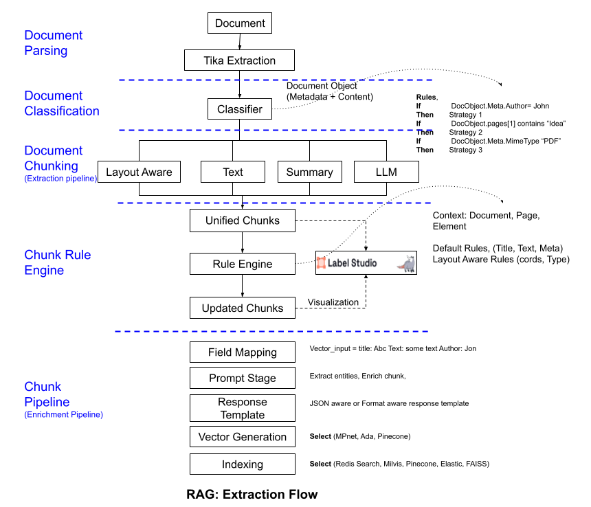
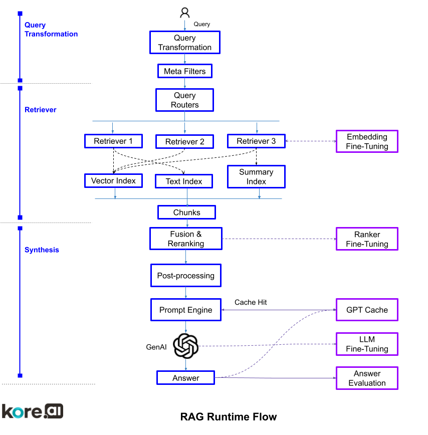
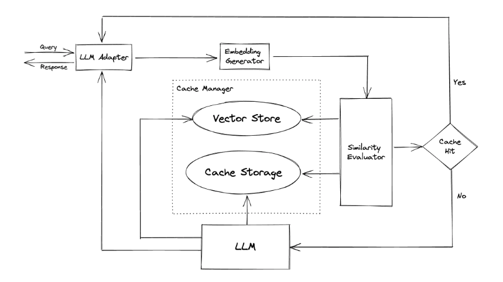

XO Platform Retriever-Augmented Generation (RAG): From Basic to Advanced
Introduction
Retriever-augmented generation (RAG) combines powerful large language models (LLMs) with retrieval over knowledge sources to provide useful information to users. In RAG systems, user queries are used to retrieve relevant context passages which are provided as input to the LLM to generate an informed response.
Basic RAG systems employ simple top-k retrieval over embeddings but face challenges around low precision, hallucinations, lack of customization, and high costs. To overcome these limitations, various advanced RAG techniques have been developed focused on improved retrieval, optimized embeddings, response generation, and evaluation.
Kore.ai's XO platform offers advanced RAG capabilities through its Search and Answers module.
What is Basic RAG?
Basic RAG combines large language model capabilities with simple retrieval over a corpus of texts. The key components are:
- Knowledge Corpus: A large collection of text documents related to the domain. This can be public corpora like Wikipedia or proprietary documents.
- Retriever: Retrieves relevant passages from the corpus given a query. Often based on dense vector search using embeddings.
- Generator: A large language model that generates a response conditioned on the query and retrieved passages.
The workflow is:
- User query is encoded into an embedding vector using a sentence encoder model.
- Relevant passages are retrieved from the corpus by finding embeddings closest to the query embedding.
- Top k retrieved passages are concatenated and provided as context to the LLM generator.
- The LLM generates a response conditioned on the context passages and query.
Usecases Better Solved by Basic RAG
Basic RAG works well for certain use cases like:
- Answering factual questions from a closed domain corpus. For example, customer support queries answered using a single document knowledge base.
The key advantages are the ability to leverage large pretrained language models for generation while focusing them on entities and facts retrieved from the knowledge corpus. This improves relevancy and factuality compared to LLM generation alone.
Challenges with Basic RAG
However, there are some key challenges and limitations to basic RAG:
Bad Retrieval
- Low precision: Irrelevant passages are retrieved which contain incorrect facts or hallucinations.
- Low recall: Relevant passages are missed, lacking context.
- Outdated information: Corpus contains redundant or outdated information.
Bad Response Generation:
- Hallucination: LLM makes up facts not grounded in retrieved passages.
- Irrelevance: Response does not answer user query even with context.
- Toxicity/Bias: LLM generates toxic, biased responses.
Non-functional
- High latency and cost due to LLM inference and embedding searches over the entire corpus.
- Privacy and security concerns due to external APIs.
Advanced RAG Techniques
To overcome these limitations, various advanced techniques have been developed within Kore.ai XO Platform Search and Answers, to enhance RAG systems:
Advanced Content Extraction and Enrichment
- Hierarchical chunking using semantic understanding to break documents into coherent chunks.
- Metadata extraction like titles, keywords, summaries to enhance searchability.
- Classification tags on chunks for filtering and routing queries.

Optimized Embeddings
- Ability to generate text embeddings from the best performing LLM for the domain
- Ability to fine tune embeddings - domain specific contextual encoders that improve semantic matching for specialized corpora.
- Learned re-ranking to pick best chunks based on query.
Advanced Retrieval Methods
- Metadata based retrieval that enriches context
- Use customer context as metadata while retrieving
- Apply business rules that add additional metadata at runtime automatically based on the user context and query context
- Sparse retrievers use inverted indexes for efficiency and textual search (BM25 and text n-gram vectors).
- Dense neural retrievers (kNN) using embeddings from LLMs such as FLAN-T5, Open AI Ada embeddings to tighten query-passage embeddings.
- Fusion of dense and sparse retrieval combines benefits of both.
Context Enrichment
- Expanding the context window around retrieved chunks improves coherence.
- Return merged paragraphs from documents instead of scattered chunks using locality sensitive hashing.
Query Rewriting
- Reformulate ambiguous or poorly formed queries using LLMs to clarify information needs.
Routing
- Send queries to specialized indexes depending on predicted metadata tags.
Response Synthesis
- Retrieve relevant key points instead of full passages to tightly focus response.
- Return highlighted annotations on passages instead of generating text.

GPT Cache
GPT Cache is a technique to reduce latency in RAG systems. It works by caching the output of the GPT generator. This can significantly reduce latency and also the cost involved, as the GPT generator does not need to be re-run for each query.
However, GPT Cache can also introduce some latency, as the cached output of the GPT generator needs to be loaded from disk. The amount of latency introduced by GPT Cache will depend on the size of the cache and the speed of the disk.

[Attribute to external]
Continuous Improvement
- Fine-tuning encoder and generator models on in-domain enterprise data.
- Human-in-the-loop evaluation with ratings to improve relevance.
Evaluation Frameworks
- RAGAS, Deepeval for end-to-end evaluation on accuracy, consistency, bias, faithfulness.
- Retriever evaluation using metrics like precision, recall, NDCG.
- Human-in-the-loop evaluation with ratings.
RAG Tools
Here are some key tools provided by XO Platform for building advanced RAG systems:
- End-to-end RAG framework with modules for extraction, indexing, retrieval, generation.
- Production RAG system optimized for speed and accuracy. Advanced ranking and retrievers.
- Modular RAG evaluation framework to measure performance.
- Storage layer for extracted document chunks, metadata, embeddings.
- Framework for fine tuning sentence encoders like FLAN-T5 on custom data.
- Uses GPT models for indexing and annotation.
Conclusion
In summary, advanced RAG techniques go far beyond basic RAG to improve the retrieval, generation, and evaluation capabilities. By combining recent innovations in information retrieval, knowledge representation, and LLMs, advanced RAG systems can provide significantly more useful and accurate responses to user queries. The tools and techniques discussed here serve as a starting point to build state-of-the-art RAG solutions.
Roadmap Items: